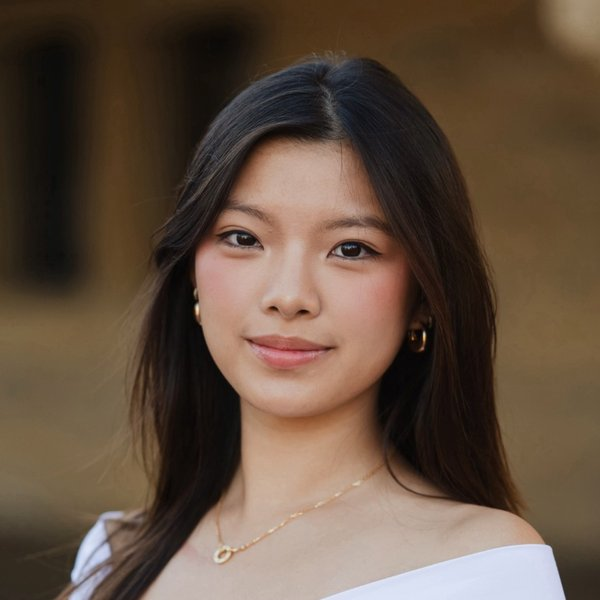

Chip Materials & Fabrication
The materials and process steps that set what chips can do.

I'm Alaina, a Stanford Materials Science and Engineering student interested in defense technology, hardware, and deep tech. I like work that connects technical research with commercialization and policy.
A few things I've worked on:
What I'm most excited to work on.
The materials and process steps that set what chips can do.
Chiplets, interconnects, and getting more out of the package.
Wide-bandgap devices and converting power efficiently.
Cutting the energy cost of every computation.
Moving heat out of dense hardware.
Lower-impact materials for computing infrastructure.
Hard-tech systems where the materials make the difference.
Research, policy, and work with startups.
Materials research for energy storage.
Managing and improving water infrastructure.
Advocacy work, including on H.R. 2950.
Working with technology companies at Stanford's hackathon.
Working with venture firms on the startup side of deep tech.